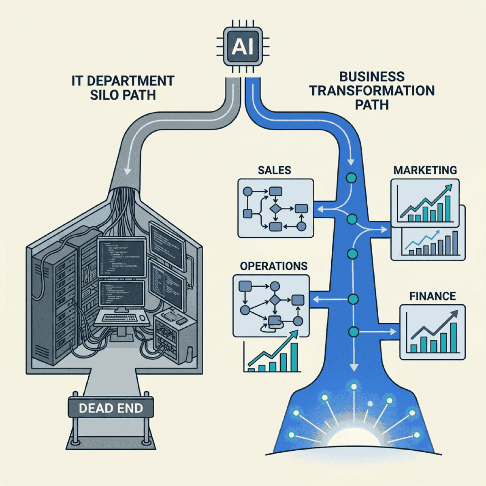

Stop Treating AI as an IT Project

TL;DR
- More than 80% of AI projects fail — twice the rate of traditional IT projects — and the root cause is organizational, not technical
- Organizations with effective executive sponsorship succeed at nearly 3x the rate of those without
- The fix isn’t better models — it’s moving AI ownership out of IT and into business leadership
- A four-question diagnostic tells you whether your AI initiative is structured to succeed or fail
Worldwide AI spending hit $1.5 trillion in 2025. Yet only 5% of companies are generating meaningful bottom-line value from AI at scale.
That’s not a technology problem. That’s an organizational design problem wearing a technology costume.
More than 80% of AI projects fail to deliver business value, according to RAND — twice the failure rate of traditional IT projects. And MIT found that about 95% of generative AI pilots are falling short of measurable revenue impact.
The numbers are brutal. But the diagnosis is surprisingly simple: most companies are treating AI as an IT project when it should be treated as business transformation.
The IT project trap
Here’s what the IT project version looks like. Engineering picks a use case. They build a pilot. They demo it to leadership. Leadership says “that’s cool.” The pilot languishes in staging because no business process actually changed.
Sound familiar?
When AI lives inside IT — scoped by engineers, measured by uptime, governed by sprint velocity — it optimizes for the wrong outcomes. The team ships a model. Nobody’s job changes. The dashboard looks impressive. Revenue doesn’t move.
RAND found that the number one cause of AI failure is stakeholders misunderstanding or miscommunicating what problem needs to be solved — not the technology itself. McKinsey puts it bluntly: AI is 20% algorithms and 80% organizational rewiring. Yet only 55% of even the top-performing companies have fundamentally reworked their processes.
If your AI initiative reports to a VP of Engineering and success is measured in models deployed rather than revenue impact, you’re in the trap.
Why the classification matters
IT projects optimize for delivery. Business transformations optimize for outcomes. The ownership structure determines the metrics, and the metrics determine what gets built.
Prosci’s research across thousands of change initiatives shows that organizations with effective executive sponsorship meet their objectives at nearly 3x the rate of those without — 72% versus 29%. And BCG found that companies with deeply engaged C-suite leaders are 12x more likely to be among the top 5% of AI winners.
McKinsey’s data reinforces the gap: at high-performing AI companies, nearly half of senior leaders show clear long-term commitment to AI initiatives — compared with just 16% at other firms.
The dominant barrier to crossing the GenAI Divide is not integration or budget — it is organizational design.
— MIT NANDA, State of AI in Business 2025
The moment your CEO delegates AI to “the tech team,” the clock starts ticking. Not because the tech team is incompetent — because the initiative loses its connection to business outcomes.
What transformation actually looks like
IBM didn’t bolt AI onto existing workflows. They decomposed their entire operations into 490 distinct workflows, identified the low-hanging fruit, and built over 3,000 digital workers.
The results: $4.5 billion in productivity gains. 3.9 million employee hours saved in a single year. $12.7 billion in free cash flow.
But the technology wasn’t the point. IBM’s approach was CEO-led and organization-wide. All 150,000 employees participated in AI training. 119,000 completed agentic AI education. The entire company restructured around AI outcomes — not just the engineering team.
IBM Consulting’s lesson is clear: don’t buy AI — redesign work for AI. The technology enables the transformation. The transformation creates the value.
Contrast that with the typical mid-market pattern. IT picks a vendor. Builds a chatbot. Nobody’s job changes. Six months later, the CEO asks why AI hasn’t moved the needle.
AI success is a top-down endeavor fundamentally dependent on meaningful engagement from the seniormost leaders in the organization.
— BCG, 2025
The restructuring playbook
You don’t need IBM’s budget. You need their approach. Here are four moves that shift AI from an IT project to a business transformation.
1. Move ownership out of IT. Your AI initiative should report to the CEO or COO, not the CTO. The CTO provides technical execution. Business leadership owns scope and success criteria. 72% of CEOs are now acting as the primary decision-maker for AI — the ones who aren’t are falling behind.
2. Define success in business terms. Not “model accuracy” or “deployment speed.” Revenue impact. Margin improvement. Customer retention. Time-to-decision. Only 12% of CEOs are seeing both higher revenue and lower costs from AI. Those 12% defined business metrics before buying tools.
3. Decompose workflows before selecting technology. Map your operations into discrete workflows. Identify where AI changes the work — not just automates a task. Then select tools. IBM started with 490 workflows and picked the easiest wins first. You can start with five.
4. Make CEO sponsorship non-negotiable. Weekly CEO visibility into AI outcomes — not technical updates. The 72% versus 29% sponsorship gap is one of the starkest numbers in the research. The biggest mistake sponsors make, according to Prosci, is failing to remain active and visible throughout the life of the project.
Is your AI initiative structured to succeed?
Run this four-question diagnostic on your current AI effort:
- Who owns the AI budget? IT department = risk flag. CEO/COO = aligned
- How is success measured? Technical metrics (uptime, accuracy) = risk. Business outcomes (revenue, margin) = aligned
- When did the CEO last review AI progress? More than 30 days ago = risk. Weekly = aligned
- Did you redesign any workflow, or just add a tool? Added a tool = risk. Redesigned work = aligned
Score yourself: 0-1 aligned = restructure now. 2-3 = course-correct. 4 = you’re in the 12%.
If you scored low, the conversation you need to have isn’t about better models or bigger data sets. It’s about organizational design.
The bottom line
AI isn’t failing because the technology doesn’t work. It’s failing because companies are running transformation initiatives with IT project governance.
56% of companies are getting nothing from their AI investments. The other 44% aren’t using better technology — they’re organized differently.
The fix is structural, not technical. Move ownership to business leadership. Define success in business terms. Decompose workflows before picking tools. And make sure your CEO stays in the room.
The companies that win with AI won’t be the ones with the best models. They’ll be the ones that stopped treating it as an IT project.
Is your AI initiative structured as a project or a transformation? Let’s talk about restructuring for outcomes that actually move the business.